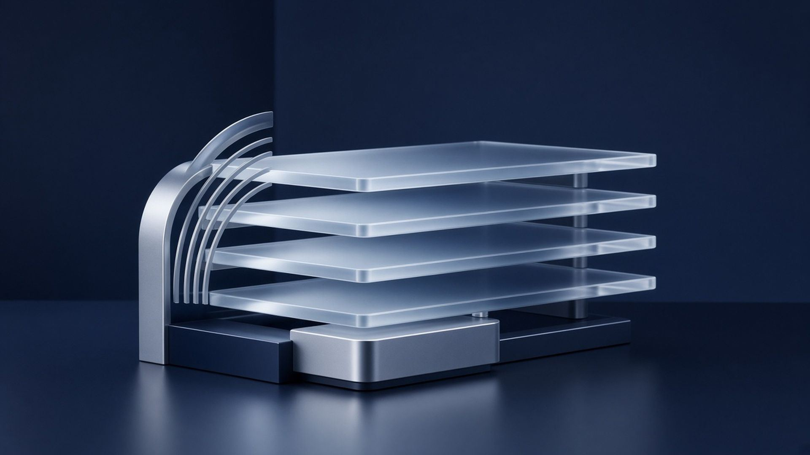

Home / Forward Engineering
Forward Engineering
Engineers who embed with your team, build working prototypes fast and ship tools that stay in use. We work where the problem is, not from a slide deck.
Most tools fail because the people who built them never saw the work. Ours sit with the people who will use them.
Forward engineers work on-site or alongside your team. They see where the work breaks first-hand, build a working version against it, and put each version in front of real users before moving on.
It's the same approach whether the job is an internal tool for a shop floor, an AI agent for a back office or a proof of concept for a new product.
From first visit to handoff
Short cycles, real users, working software at every step.
Embed
We work on-site or alongside your team to see how the work really happens and where it breaks.
Prototype
A working version of the highest-value fix goes in front of real users early, then gets refined.
Field
A production build, connected to the systems you already run, with security and access designed in.
Hand off
Documentation, training and a clean handover, or ongoing support if you want us to keep it running.
What we build
Software and systems sized for the problem. We use the platforms you already have where we can and add new ones only when they clearly pay off.
Internal tools and field apps
Purpose-built apps for the people doing the work, from the office to the floor.
AI agents and assistants
Agents that read, draft and route work, with a person approving the output.
System integrations
Connections between ERP, CRM, spreadsheets and the tools teams already use.
Data pipelines and dashboards
Clean, connected data and the views leaders check every week.
Proofs of concept
Working demos for a new product, an internal pitch or an investor.
Ways to work with us
Every engagement is scoped after a discovery call. Lengths below are typical starting points.
| Model | Best for | Typical length |
|---|---|---|
| Assessment | Knowing where to start | 2 to 4 weeks |
| Fixed-scope build | One clear outcome, such as a prototype or a single agent | 6 to 12 weeks |
| Embedded team | Larger programs that need engineers inside your team | 3 to 9 months |
| Ongoing or fractional support | Upkeep and leadership without a full-time hire | Monthly |

Have something that needs to exist by next quarter?
Tell us what it is and who will use it. We'll tell you how we'd prototype it and what a first version would take.